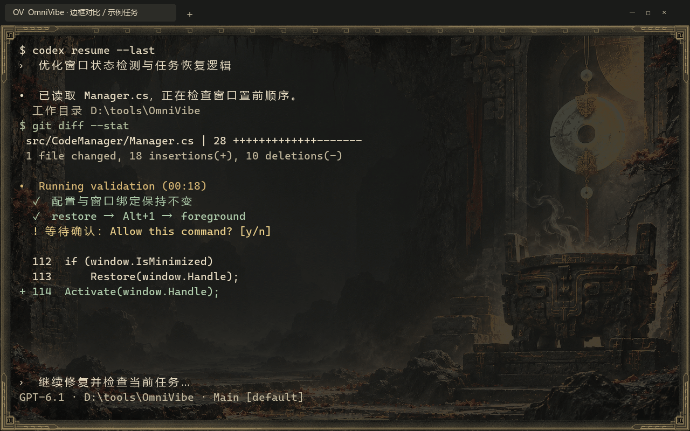

固定位置，形成习惯
把任务交给 1–9 号槽位。编号快捷键与轮盘，为不同操作习惯提供入口。
Alt + 1–9OMNIVIBE / THEME GALLERY
集中收纳、快捷切换、一键排列，让多窗口工作更有条理。
这里按圆盘、总览、配装和终端模块，展示 13 套主题的不同效果。
THE COLLECTION

展示来自仓库已有开发截图，包含示例任务。部分截图早于最新交互调整，静态图不代表实测切换速度或完整验收结果。
把任务交给 1–9 号槽位。编号快捷键与轮盘，为不同操作习惯提供入口。
Alt + 1–9打开总览，查看窗口与接入后的任务状态。没有有效事件时，明确显示未知。
Tab · 可改键将已收录窗口按选定布局排开，再次触发恢复原布局，减少手动拖动与缩放。
查看使用方法 ↗